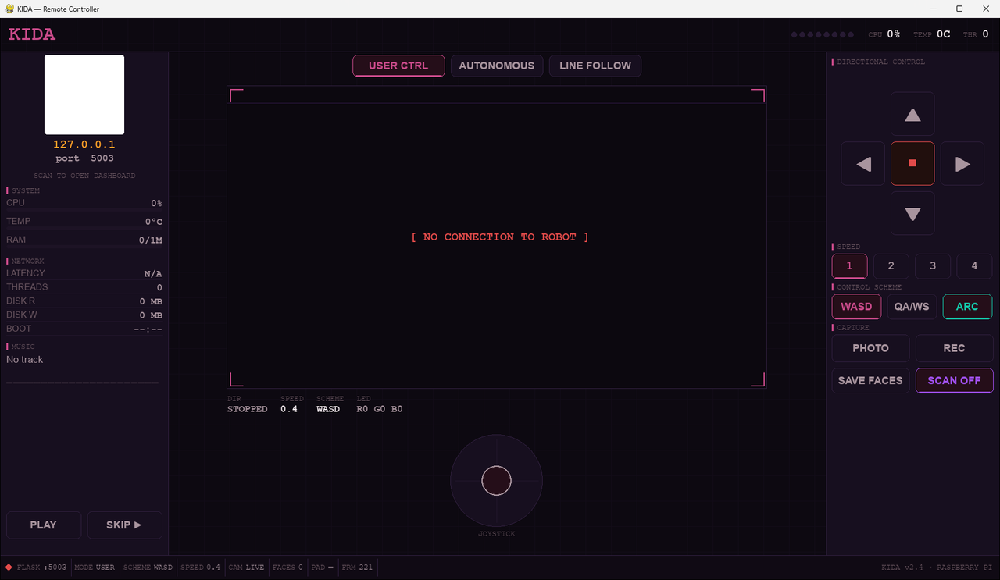
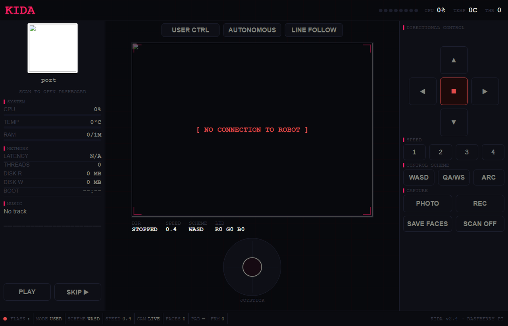

Overview
A scout that sees, drives and decides
Multi-protocol
Drive her from the web interface, over VNC, from the desktop remote controller or with a wireless keyboard.
Live surveillance
HD video streaming with on-demand photo and video capture.
Biometric inference
Edge vision processing for real-time gender and age detection, right on the Pi.
Reactive behaviours
Ultrasonic obstacle avoidance and high-contrast line following.
Visual feedback
Customisable RGB lighting for status signals and lighting up her surroundings.
Desktop controller
The same HUD as the robot, running on another PC, with keyboard, mouse and gamepad support.
Hardware
What she's built from
- 01 Raspberry Pi 3B
- 02 Freenove Tank Robot HAT v2
- 03 Robot tank chassis
- 04 2× 5 V DC motors
- 05 Raspberry Pi camera
- 06 HC-SR04 ultrasonic sensor
- 07 3-channel line tracking sensor
- 08 2S 18650 battery pack
- 09 PC, Android or iPhone + wireless keyboard
Pinout
KIDA uses the v2 HAT from the Freenove Tank Robot. These are its GPIO assignments.
| Sensors & outputs | GPIO |
|---|---|
| Ultrasonic TRIG | 27 |
| Ultrasonic ECHO | 22 |
| Servo 0 / 1 / 2 | 12 / 13 / 19 |
| LED pixel | 10 |
| IR01 / IR02 / IR03 | 16 / 26 / 21 |
| Motors | GPIO | |
|---|---|---|
| Left IN1 / IN2 | 23 / 24 | M1+ / M1− |
| Right IN1 / IN2 | 6 / 5 | M2+ / M2− |
Controls
Two ways to drive
Standard WASD vectoring
W/S forward and back, A/D rotate. Smooth, cinematic driving.
Tank-style tracks
Q/A drive the left bank, W/S the right. Best for heavy terrain and precise pivots.
Keys
| Key | Action |
|---|---|
| TAB | Cycle modes |
| U / O / L | User control / autonomous / line follower mode |
| X | Speed control |
| C / V | Take a photo / record video |
| M / Space | Play music / stop music |
Gamepad
Xbox, PlayStation, Switch Pro and most others work the same on the robot, the remote controller and the web dashboard. Plug one in any time.
| Button | Action |
|---|---|
| Left stick | Drive (analog). Both sticks drive the tracks in the tank scheme |
| D-pad | Drive like WASD |
| A / B | Cycle speed / stop |
| X / Y | Photo / arc turns on-off |
| LB / RB | Previous / next mode |
| Back / Start | Save faces / play-pause music |
Safety: the robot stops any remote drive it hasn't heard about for 0.8 s, so a dropped connection or a closed window never leaves her driving.
Connectivity
Join the fleet
| Setting | Value |
|---|---|
| WiFi SSID | NORA |
| Password | 12345678 |
| RIFT / remote controller port | 5003 |
Open her address on port 5003 in any browser on the same network to get the HTML remote controller, or connect through RIFT.
Quick start
From SD card to driving
Install Raspberry Pi OS, clone the repo onto the Pi, then set up the environment:
$ python3 -m venv venv $ source venv/bin/activate $ pip install --upgrade pip $ pip install -r requirements.txt
Run her with Python, or with the shell scripts (give them permission once):
$ python run.py $ chmod +x make_executables.sh && ./make_executables.sh $ ./run.sh # main environment $ ./linefollower.sh # one behaviour on its own $ ./obstacle_avoidance.sh
Remote controller
The same window as the robot's HUD, running on another PC. The first run creates controller/venv with just pygame and requests.
$ ./run.sh 192.168.1.50 # Linux / macOS (from controller/) > run.bat 192.168.1.50 # Windows $ python main.py http://192.168.1.50:5003 --fullscreen
Screens
The controllers
Captured without a robot connected, so live values show their offline state.

